Pairs Trading Held a Beta of 0.02 for 27 Years. Choosing the Pairs Added Nothing.
The textbook distance method, tested on the 22 ETFs a retail trader can actually borrow. It is the most market-neutral thing in this series, and randomly chosen pairs did just as well.
Every strategy in this series so far has needed the market to go somewhere. Dual momentum and the 10-month moving average need it to trend. The Donchian breakout needs it to break out. Even RSI(2), which buys weakness, needs the snap-back to arrive within a few days. All four are long-only, and all four spend part of their history sitting in Treasury bills because the only alternative they have to owning the index is owning nothing.
Pairs trading is the first strategy here that does not care which way the market goes. You buy one instrument, short another, and collect the difference when the gap between them closes. The market can halve; if your two legs halve together, you are flat.
That is an appealing promise, and the academic record behind it is strong. So this article tests whether it survives contact with the instruments a retail account can actually borrow.
It does deliver the neutrality. A beta of 0.02 and a correlation of 0.13 to the S&P 500 over 27 years is the real thing — the engine did not know what the market was doing and neither did the strategy.
It delivers nothing else. −0.13% a year after costs, and when I replaced the pair-selection step with a random draw, the random pairs returned −0.10% — statistically the same number.
New to systematic trading? Terms like CAGR, Sharpe ratio, turnover, drawdown and beta are explained in plain language in the glossary — no prior knowledge assumed. Dotted underlines link straight to the relevant entry.
The rule, exactly as backtested
This is the distance method from Gatev, Goetzmann and Rouwenhorst's 2006 paper, which is the canonical academic treatment and the version most retail write-ups are descended from.
The mechanics, using daily closing prices only:
• Formation. Every six months, take the last 12 months of closes for each instrument and normalise each one to a cumulative total-return index starting at 1. For every possible pair, compute the sum of squared differences between the two normalised series. Rank the pairs by that sum and keep the five smallest — the five pairs that tracked each other most closely over the formation year.
• Trading. Over the following six months, watch the spread between each chosen pair's normalised series. When it opens beyond two formation-period standard deviations, short the leg that has risen and buy the leg that has fallen, in equal dollar amounts.
• Exit. Close the position when the spread crosses zero, or at the end of the six-month trading window, whichever comes first.
• Signals are computed at the close and filled at the next close. Capital not committed to a pair earns the T-bill rate.
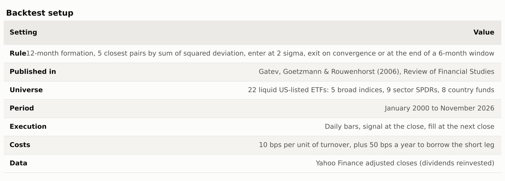
The universe is 22 liquid ETFs: the four big US index funds, the nine original S&P sector SPDRs, a mid-cap fund, and eight single-country funds. That gives 231 possible pairs at each formation. This is the single most important caveat in the article and I will come back to it at the end, because GGR tested individual US stocks — thousands of CRSP names — and 231 ETF pairs is a different problem.
One structural note, since it is the first long/short book in this series. The engine previously validated that portfolio weights sum to no more than 1.0, which silently made negative weights impossible. It now checks the gross sum only, and charges borrow on short exposure every day the position is open. A market-neutral pair shows up as weights of +0.1 and −0.1: gross exposure 0.2, net exposure zero.
Results
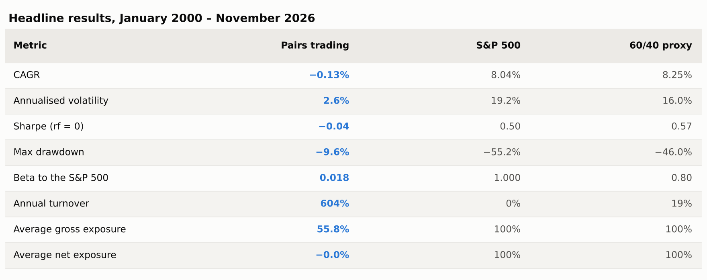
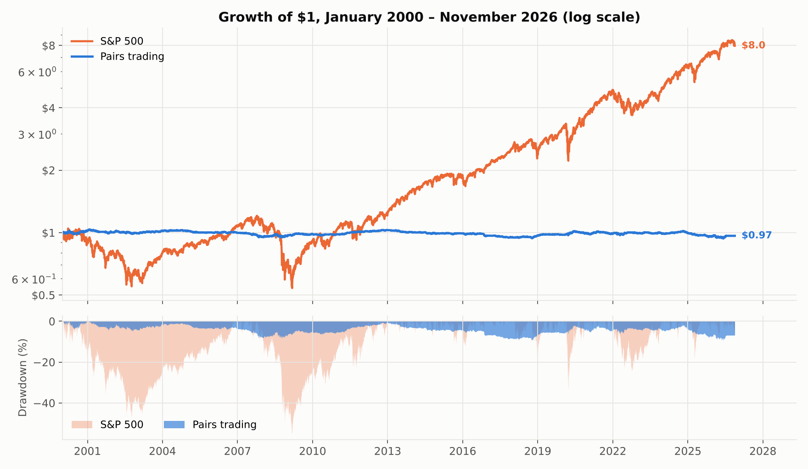
−0.13% a year, a Sharpe ratio of −0.04, a worst drawdown of −9.6%. Volatility of 2.56% against the index's 19.2% — roughly one seventh the risk, and roughly none of the return. A dollar invested in January 2000 came back as $0.97.
The neutrality is not a rounding artifact. Average net exposure across the whole history was 0.00%, with average gross exposure of 55.8% — meaning roughly 28% long and 28% short at any moment, and a position open on 96.2% of days.
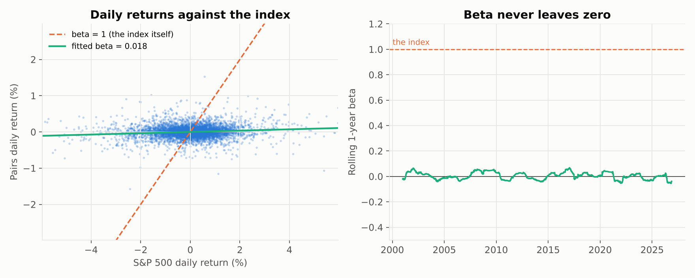
That chart is the thing this strategy actually produces. Its beta stays inside a hand's width of zero through the dot-com bust, 2008, COVID and 2022. If what you wanted was an uncorrelated return stream, the method delivers an uncorrelated return stream. It just does not deliver a return.
Choosing the pairs did nothing
The whole intellectual content of the distance method is the selection step. Of 231 candidate pairs, it keeps the five that tracked most closely, on the theory that close historical tracking implies an economic link that will pull the spread back together.
So I tested that directly: same formation schedule, same entry threshold, same exit, same costs — but the five pairs drawn at random from the 231 instead of ranked by distance. Five independent draws.
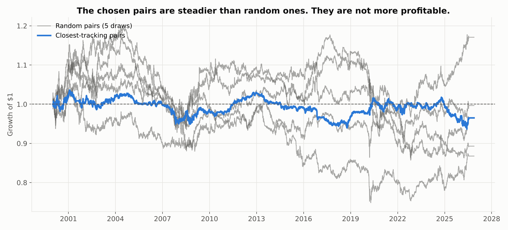
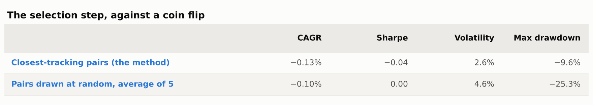
The chosen pairs returned −0.13%. The random draws averaged −0.10%. One of the five random draws returned 0.59%, which is the best result anywhere in this article.
What selection does buy is steadiness. Volatility of 2.56% against 4.57% for the random draws, and a worst drawdown of −9.6% against −25.3%. Closely-tracking pairs really do stay closely tracked — the spread is tighter, so the position is calmer. That is a genuine property and it is worth something in a portfolio context.
But it is not an edge. It is a volatility reduction applied to an expected return of approximately zero, and dividing zero by a smaller number does not help.
The premise fails more often than it holds
The method rests on one assumption: a spread that has opened will close. Here is how often it did.
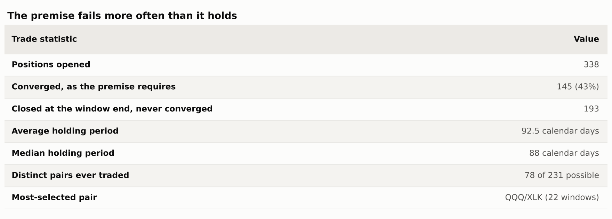
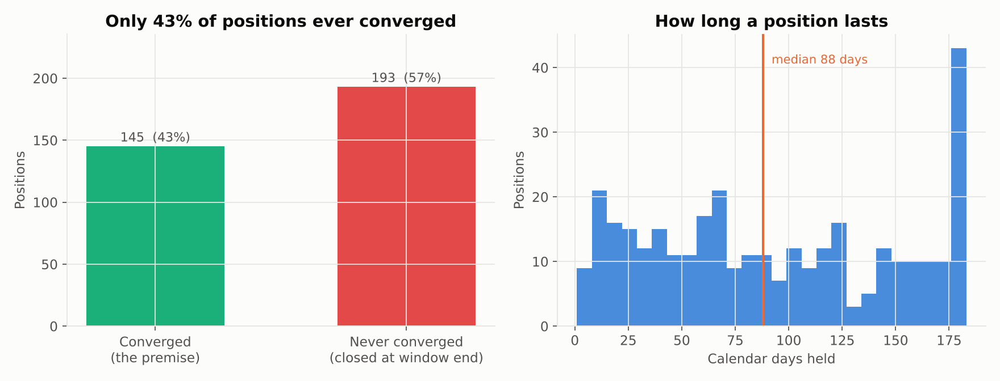
Of 338 positions opened, 145 converged — the spread crossed zero and the trade closed as designed. 193 were still open when the six-month window expired and were liquidated wherever they happened to be. That is a convergence rate of 42.9%: the central premise of the strategy held fewer than half the times it was tested, and the average position was carried for 92.5 days waiting.
This is where the ETF universe bites. Look at what the distance ranking actually selects:
QQQ/XLK was chosen 22 times out of 54 formations. SPY/DIA, 21 times. IWM/MDY, 18 times. The ranking is doing exactly what it was told — it finds the closest-tracking pairs in the universe, and in a universe of index funds those are near-duplicates. QQQ and XLK hold many of the same mega-cap technology names. SPY and DIA are two slices of the same large-cap US market.
Two instruments that track each other that closely rarely diverge by two standard deviations for an honest reason. When they do, it is usually because something structural changed — a sector reweighting, a different concentration limit biting — and structural changes do not revert. The method selects the pairs least likely to produce a tradable divergence, and then waits.
Costs are the entire result
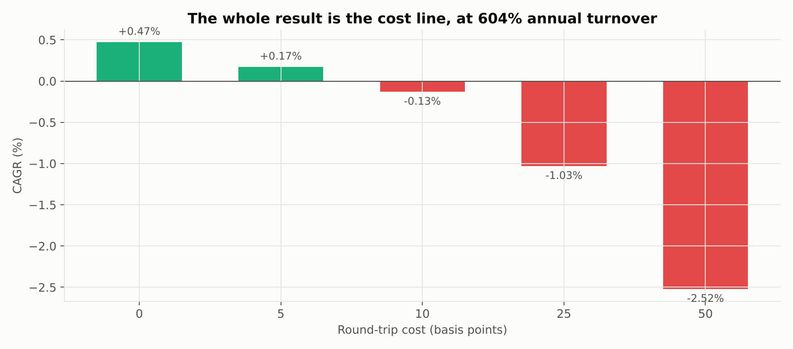
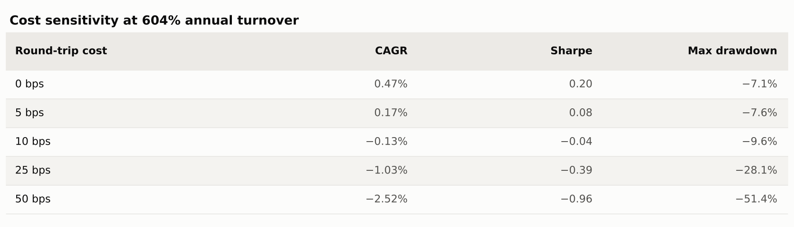
Frictionless, the strategy returns 0.47% a year at a Sharpe of 0.20. At 5 bps, 0.17%. At 10 bps — the assumption used throughout this series — −0.13%. At 25 bps, −1.03%. At 50 bps, −2.52%.
At 604% annual turnover there is no version of this where execution is a detail. The gross edge is about half a percent a year and the cost schedule eats all of it somewhere between 5 and 10 basis points.
The borrow fee, which is new to the engine for this article, turns out to be the smaller problem:
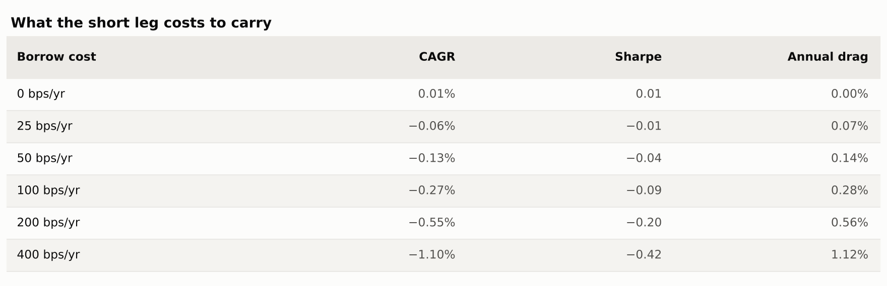
At 50 bps a year on short exposure the drag is 0.14% annually, because only about 28% of capital is short at any time. Even at 400 bps — a punitive rate for liquid ETFs, though an entirely normal one for a hard-to-borrow single stock — the drag is 1.12%. With borrow free the strategy returns 0.01%: still nothing. Shorting costs are not what broke this.
Trading less is the only thing that helps
Both parameter sweeps point the same direction, which is informative about what is going on.
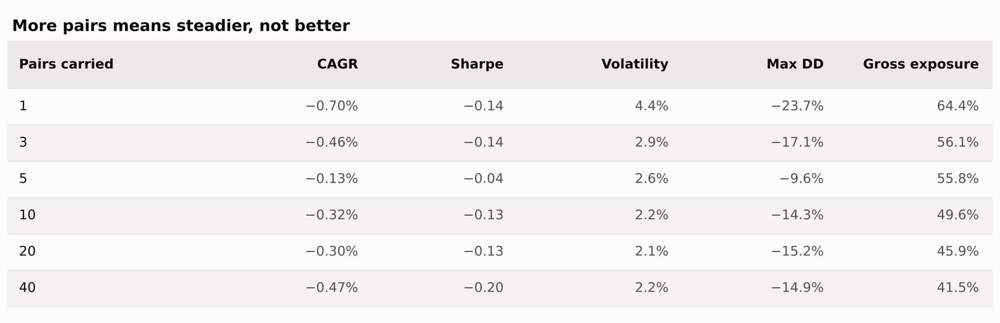
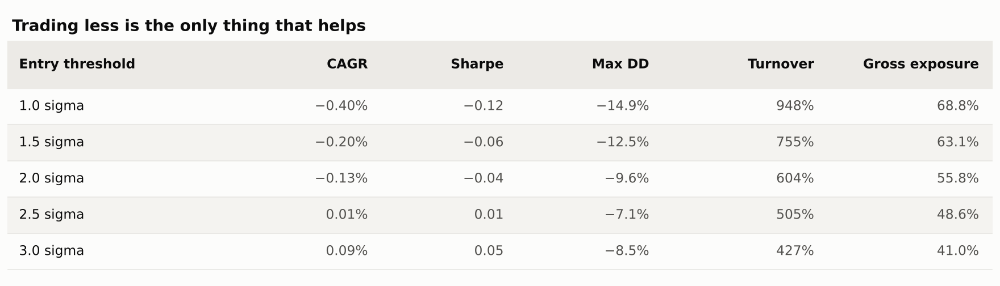
Widening the entry threshold from 2σ to 3σ cuts turnover from 604% to 427% and takes the CAGR from −0.13% to 0.09% — the only positive number in either grid. Carrying one pair instead of five returns −0.70%; carrying forty returns −0.47%.
No setting in either sweep produces a real return. The best thing you can do to this strategy is make it trade less, which is the signature of a rule whose gross edge is smaller than its cost per round trip. Every knob that reduces activity improves the result, and none of them improve it enough to matter.
Before and after publication, for once, is not the story
This is the fourth strategy in the series to be tested against its own publication date. The previous three all decayed sharply afterwards.
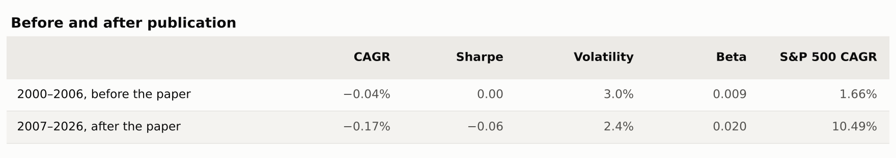
Before 2007: −0.04% a year. After 2007: −0.17%. The index went from 1.66% to 10.49% over the same split.
There is no decay story here because there was nothing to decay. This version of the rule did not work in the first seven years either. That is a cleaner finding than the alternative — I cannot claim competition arbitraged away an edge that is not visible in the early sample.
Worth noting what the strategy did during the one week it should have been most exposed. August 2007 — the quant quake, when statistical-arbitrage books across the industry suffered simultaneous double-digit losses as leverage unwound — shows up here as 0.10%. The reason is unglamorous: this book runs unlevered at 55.8% gross. What hurt those funds was leverage of five to eight times, not the signal.
Where it did earn its keep
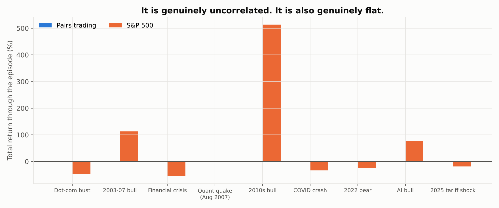
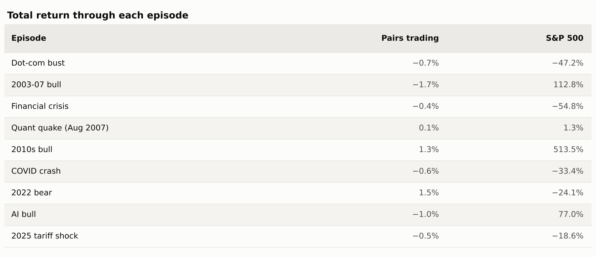
Through the dot-com bust the strategy returned −0.71%; the index returned −47.2%. Through the financial crisis, −0.37% against −54.8%. Through the 2022 bear market, 1.47% against −24.1% — a positive number in a year that took a quarter off the index.
In the index's down months the strategy beat it by 3.68% on average. That is what a beta of 0.02 looks like from the other side, and it is the only genuinely attractive column in this article.
It is also what cash does. A T-bill ladder was up in 2022 as well, with no borrow fee, no 604% turnover and no convergence assumption. The honest comparison for a market-neutral strategy earning zero is not the index — it is the risk-free rate, and this strategy lost to it over 27 years.
What I'd take from this
The structural result is worth separating from the performance result, because only one of them is about pairs trading.
The structure works. It is possible to build a daily-rebalanced long/short book out of liquid ETFs that holds a beta of 0.02 and a correlation of 0.13 through four major bear markets, at a worst drawdown of −9.6%. That machinery is reusable and it is now in the engine. The hard part of market neutrality turns out not to be the neutrality.
The signal does not. On this universe the distance method has a gross edge of roughly half a percent a year, no advantage over random pair selection, and a convergence rate under 50%. It is not a close call that better execution would rescue; at zero costs and zero borrow it still returns under 0.5% a year.
If I were trying to make something of this, the direction would be the universe rather than the rule. The method needs pairs that are economically linked but not substitutes — two refiners, two regional banks, a company and its spun-off subsidiary — where divergence happens for idiosyncratic reasons that genuinely revert. An ETF universe cannot offer that: its closest-tracking pairs are near-identical index funds, and its genuinely different instruments are not linked at all. That is a universe problem, and it is not solvable by tuning σ.
Caveats worth stating plainly
This is not a refutation of Gatev, Goetzmann and Rouwenhorst. They tested individual US stocks from CRSP, with thousands of names and millions of candidate pairs, over 1962–2002, and reported excess returns of roughly 11% a year before costs on the top-5 pairs portfolio. Twenty-two ETFs over 2000–2026 is a different experiment with a different question: whether the method survives a universe a retail trader can actually access and cheaply borrow. It does not. Both results can be true, and the gap between them is mostly about how many pairs you get to choose from.
One formation schedule, one entry rule, no stop. The 12-month formation and 6-month trading window are GGR's; the strategy has no stop-loss, which means a position that diverges keeps diverging until the window closes. Do and Faff's follow-up work finds the method's returns declining over time even on stocks, and adding a stop changes the trade distribution materially. I have not tested that here.
Dollar-neutral, not beta-neutral or dollar-volatility-weighted. The legs are sized equally in dollars, which is what the paper does and what most implementations do. Sizing by volatility or by beta would change the risk profile and is a reasonable variant I did not run.
No survivorship problem, but a selection one. The 22 ETFs all exist today, and I chose them. An honest universe test would start from the ETFs available in 1999 and let the universe grow, which would mean fewer instruments early and different pairs chosen throughout.
And as always: one window, one market, instrument choice made with hindsight.
The code
Same open-source harness as the rest of the series. This article needed the engine to hold a short book, so it now validates gross weights without rejecting negative ones and charges a borrow fee on short exposure each day. Both are covered by tests. Each run writes a single JSON file with every metric, which is what these charts and tables were rendered from.
pip install -r requirements.txt
python strategies/pairs-trading/run.py
python strategies/pairs-trading/make_charts.pyCode: strategy-lab/strategies/pairs-trading — this strategy, with every output file committed. Engine: AlgoStrategyLab/strategy-lab — the shared harness, MIT licensed.
Next up: volatility targeting — not a strategy that decides what to own, but a layer that decides how much, applied to every rule tested in this series so far.
References. Gatev, E., Goetzmann, W. N. & Rouwenhorst, K. G. (2006), "Pairs Trading: Performance of a Relative-Value Arbitrage Rule", Review of Financial Studies 19(3) — the distance method tested here. Do, B. & Faff, R. (2010), "Does Simple Pairs Trading Still Work?", Financial Analysts Journal 66(4). Khandani, A. & Lo, A. (2007), "What Happened to the Quants in August 2007?". Avellaneda, M. & Lee, J.-H. (2010), "Statistical Arbitrage in the US Equities Market". Data: Yahoo Finance adjusted closes, retrieved 17 November 2026.
This is research and education, not investment advice. Backtests benefit from hindsight in instrument choice and start date, and past performance does not predict future results.